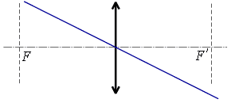
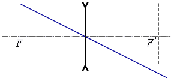
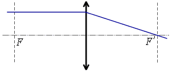
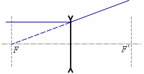
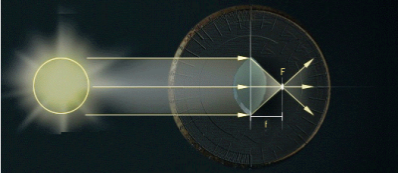
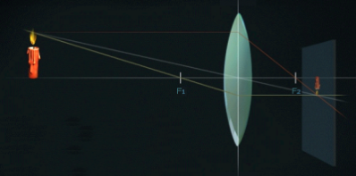
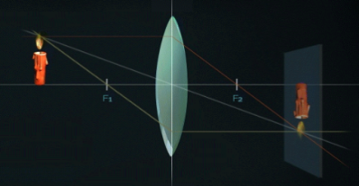
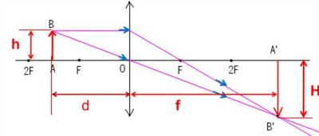
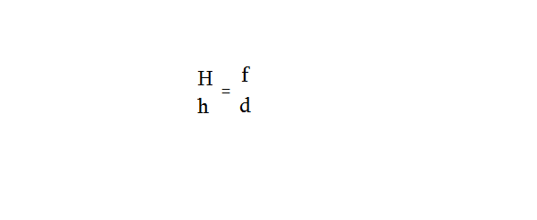
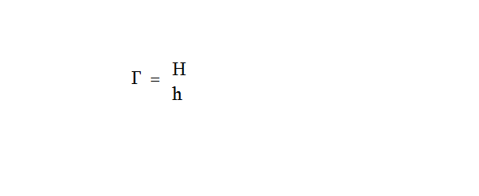

33. Առարկայի պատկերի կառուցումը բարակ ոսպնյակում: Բարակ ոսպնյակի բանաձևը
Առարկայի պատկերի կառուցումը բարակ ոսպնյակում: Բարակ ոսպնյակի բանաձևը:
Տարբեր օպտիկական սարքերում կիրառվող ոսպնյակները թույլ են տալիս ոչ միայն հավաքել կամ ցրել լուսային ճառագայթները, այլև ստանալ առարկաների զանազան՝ մեծացած կամ փոքրացած, ուղիղ կամ շրջված, իրական կամ կեղծ պատկերները:

Պարզվում է, որ ստացված պատկերի բնույթը կախված է ոսպնյակի տեսակից, ինչպես նաև առարկայի և ոսպնյակի փոխդասավորությունից:
Ինչպես գիտենք մարմինները տեսանելի են, եթե արձակում են լուսային ճառագայթներ կամ անդրադարձնում են իրենց վրա ընկնող լուսային ճառագայթները: Ոսպնյակով անցնելիս այդ ճառագայթները կարող են զուգամիտել. նման դեպքում ճառագայթների հատման կետում կստացվի այն կետի իրական պատկերը, որտեղից դուրս էին եկել այդ ճառագայթները: Իսկ երբ ճառագայթները տարամիտում են, ապա նրանց շարունակությունների հատման կետում կստացվի այդ կետի կեղծ պատկերը:
Առարկայի տարբեր կետերի իրական (կամ կեղծ) պատկերների ամբողջությունը կոչվում է առարկայի իրական (կամ կեղծ) պատկեր:
Առարկայի պատկերը ստանալու համար կարիք չկա ստանալ նրա բոլոր կետերի պատկերները. բավական է կառուցել առարկայի ծայրակետերի պատկերը: Առարկայի պատկերը ընկած կլինի նրանց միջև: Իսկ ծայրակետի պատկերը ստանալու համար կարելի է ընտրել այդ կետից դուրս եկող անհամար ճառագայթներից այն երկուսը, որոնց ընթացքը ոսպնյակում նախօրոք հայտնի է:
Այդպիսի «հարմար» ճառագայթներն են.
ա) ոսպնյակի օպտիկական կենտրոնով անցնող ճառագայթը.


Ոսպնյակով անցնելիս այս ճառագայթը չի փոխում իր ուղղությունը:
բ) ոսպնյակի գլխավոր օպտիկական առանցքին զուգահեռ ճառագայթը.


Ոսպնյակով անցնելիս, եթե ոսպնյակը հավքող է՝ ապա ճառագայթը, իսկ եթե ցրող է՝ ճառագայթի շարունակությունը, անցնում է ոսպնյակի գլխավոր կիզակետով:
Օգտվելով այս «հարմար» ճառագայթներից, օրինակ, կարող ենք կառուցել AB մատիտի պատկերը, եթե ստանանք նրա A և B ծայրակետերի պատկերները՝ A1-ը և B1 -ը: A1B1 հատվածը կլինի AB մատիտի պատկերը:

Կարելի է ցույց տալ, որ կախված առարկայի բարակ ոսպնյակից ունեցած հեռավորությունից, նրա պատկերը տարբեր է ստացվում:
Նշանակենք առարկայի հեռավորությունը բարակ ոսպնյակից՝ d-ով, նրա պատկերի հեռավորությունը ոսպնյակից՝ f-ով, իսկ ոսպնյակի կիզակետային հեռավորությունը՝ F-ով և դիտարկենք հետևյալ դեպքերը.
1. d>>F /առարկան շատ հեռու է ոսպնյակից/
Այս դեպքում առարկայից դուրս եկող ճառագայթները զուգահեռ կլինեն գլխավոր օպտիկական առանցքին, և առարկայի պատկերը կստացվի գլխավոր կիզակետում՝ լուսավոր փոքր կետի տեսքով:

2. d>2F /առարկայի հեռավորությունը ոսպնյակից նրա կրկնակի կիզակետային հեռավորությունից մեծ է/
Օգտվելով «հարմար» ճառագայթներից կարող ենք կառուցել գլխավոր օպտիկական առանցքին ուղղահայաց տեղադրված AB սլաքի պատկերը՝ A1B1-ը: Ինչպես երևում է գծագրից, այն իրական է, շրջված, փոքրացած՝ H < h, ստացվում է ոսպնյակի կիզակետի և կրկնակի կիզակետի միջև, այսինքն՝ F < f < 2F:

3. d=2F /առարկան տեղադրված է ոսպնյակից՝ նրա կրկնակի կիզակետային հեռավորության վրա/
Կառուցումից երևում է, որ առարկայի պատկերը իրական է, շրջված, նույն չափերի՝ H=h և ոսպնյակից նույն հեռավորության վրա՝ d=2F:

4. F < d < 2F / առարկան տեղադրված է ոսպնյակի կիզակետի և կրկնակի կիզակետի միջև /
Կառուցումից երևում է, որ սլաքի պատկերը իրական է, շրջված, մեծացած՝ H>h և ոսպնյակի կրկնակի կիզակետային հեռավորությունից մեծ հեռավորության վրա՝ f>2F

5. d=F /առարկան տեղադրված է ոսպնյակի գլխավոր կիզակետում/
Կառուցումից երևում է, որ սլաքի ծայրակետերից դուրս եկող ճառագայթները ոսպնյակում բեկվելուց հետո դառնում են իրար զուգահեռ, հետևաբար չեն հատվում և պատկեր չի ստացվում:

6. 0< d < F /առարկան տեղադրված է ոսպնյակի և նրա կիզակետի միջև/
Կառուցումից երևում է, որ սլաքի պատկերը ստացվում է կեղծ, ուղիղ, մեծացած՝ H>h, ոսպնյակի նույն կողմում, որտեղ առարկան է:

Կատարելով նույնանման կառուցումներ, կստանանք, որ առարկայի պատկերը ցրող ոսպնյակում` անկախ առարկայի դիրքից, կեղծ է, փոքրացած, ուղիղ և ոսպնյակի նույն կողմում, որտեղ առարկան է:

Բարակ ոսպնյակի բանաձևը
Կառուցման եղանակով, օգտվելով ստացված եռանկյունների նմանության հայտանիշներից, կարելի է ցույց տալ, որ առարկայի հեռավորությունը ոսպնյակից՝ d -ն, առարկայի պատկերի հեռավորությունը ոսպնյակից՝ f-ը և ոսպնյակի
կիզակետային հեռավորությունը` F-ը կապված են հավասարմամբ, որն անվանում են բարակ ոսպնյակի բանաձև:
Եթե ոսպնյակը հավաքող է, ապա բանաձևում F>0, իսկ եթե ցրող է, ապա F < 0
Եթե առարկայի պատկերը իրական է, ապա f>0, իսկ եթե կեղծ է, ապա f < 0:

Կառուցման եղանակով, ստացված եռանկյունների նմանությունից հետևում է, որ
Իսկ ինչպես գիտենք, ոսպնյակի գծային խոշորացումը՝
Հետևաբար գծային խոշորացումը կարելի է որոշել նաև
բանաձևով: